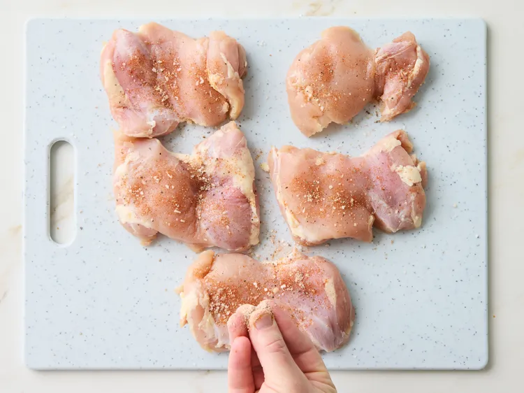
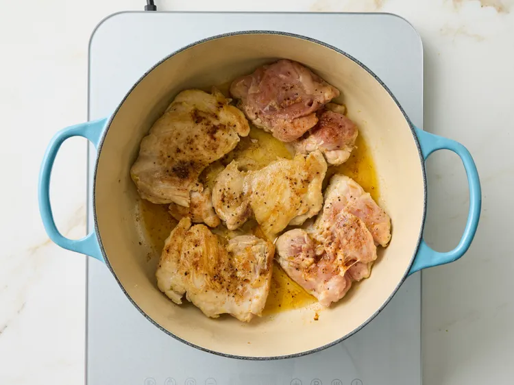
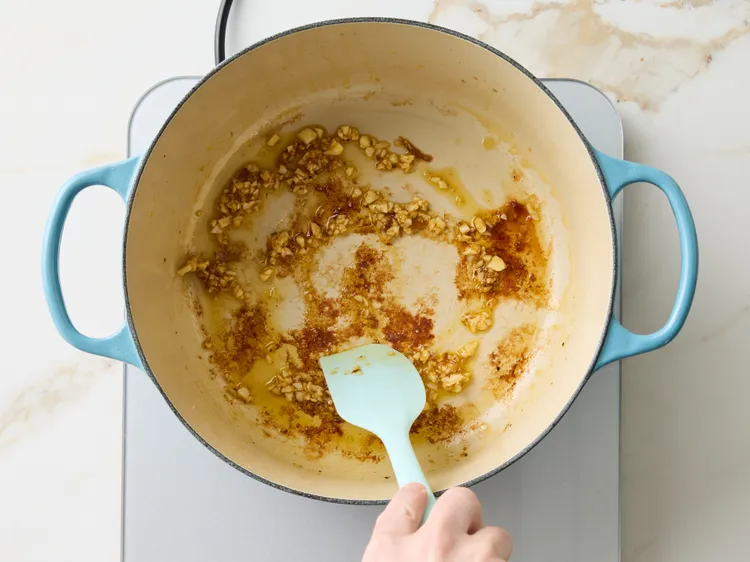
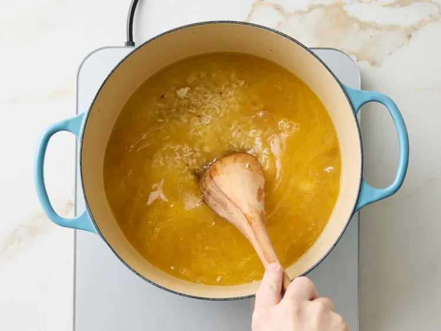
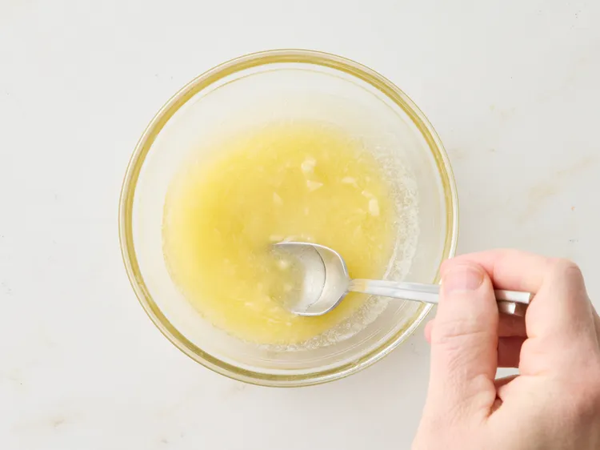
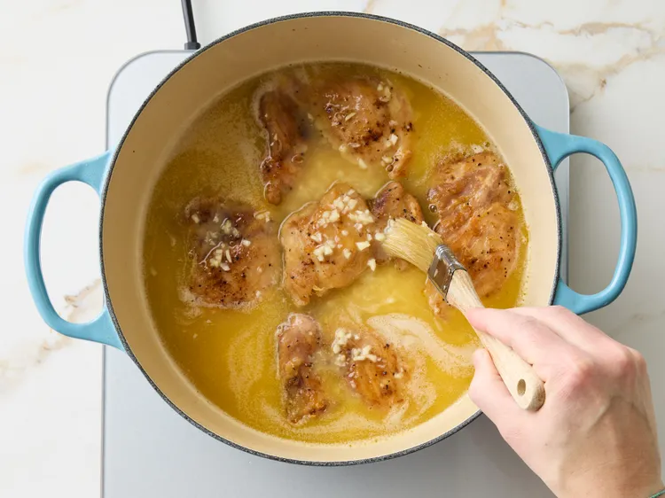
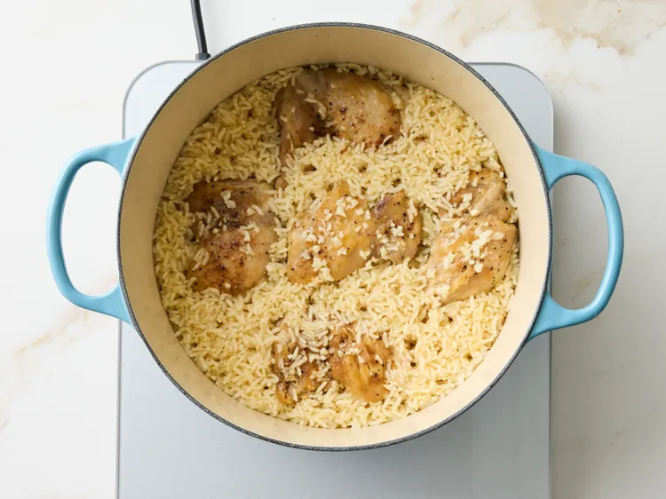
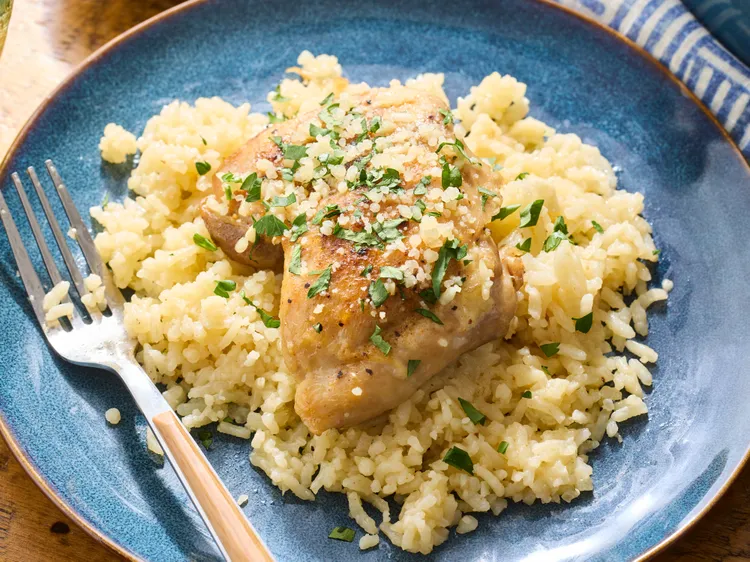

One-Pan Garlic Butter Chicken and Rice

Garlic Butter and Chicken Rice
Prep Time:10 mins Cook Time: 40mins
Total Time:50 mins Servings:6
In this recipe, chicken thighs and rice are cooked together in a rich garlicky butter sauce.
It takes minimal prep and only one pot, makes it the perfect meal for busy weeknights
for when you want delicious meals with less hassle.
Ingredients
1 1/2 pounds boneless skinless chicken thighs (about 6)
1/2 teaspoon salt
1/2 teaspoon onion powder
1/4 teaspoon freshly ground black pepper
1/4 teaspoon paprika
2 tablespoons olive oil,or more as needed,divided
8 cloves garlic, minced, divided
1/4 cup butter, cut into pieces
1 1/2 cups long-grain white rice, rinsed
3 cups chicken broth
2 tablespoons butter, melted
2 tablespoons chopped fresh parsley, for garnish
2 tablespoons freshly grated Parmesan cheese, for garnish
Directions
Step 1
Season your chicken on both side with salt, black pepper, onion powder and some paprika.

Credit:Photographer: Jacob Fox / Food Styling: Shannon Goforth / Prop Styling: Kristen Schooley
Step 2
Heat 2 tablespoons of olive oil in a 5 to 6-quart Dutch oven over medium high heat, then add chicken thighs.
Cook until seared and browned lightly, 4 to 5 minutes on each side, then transfer to a plate.

Credit:Photographer: Jacob Fox / Food Styling: Shannon Goforth / Prop Styling: Kristen Schooley
Step 3
Reduce heat to medium, and add 1 tablespoon of olive oil if needed. Then stir in 6 cloves of the minced garlic
and cook until fragrant, about 30 seconds.

Credit:Photographer: Jacob Fox / Food Styling: Shannon Goforth / Prop Styling: Kristen Schooley
Step 4
Add 1/4 cups of butter. After melted, stir the rice in until fully coated, then pour in chicken broth.
Scrape the bottom of the Dutch oven to loosen the stuck browned bits.Bring it to a boil over high heat, then reduce to medium-low,
and let it simmer for 10 minutes with the cover on.

Credit:Photographer: Jacob Fox / Food Styling: Shannon Goforth / Prop Styling: Kristen Schooley
Step 5
Add the remaining melted butter and 2 minced garlic cloves in a small bowl, then set aside.

Credit:Photographer: Jacob Fox / Food Styling: Shannon Goforth / Prop Styling: Kristen Schooley
Step 6
Place the chicken inside the dutch oven.
Brush the tops of the chicken with the garlic and butter mixture, then cover.

Credit:Photographer: Jacob Fox / Food Styling: Shannon Goforth / Prop Styling: Kristen Schooley
Step 7
Continue cooking until the rice absorbs all the liquid and the chicken is cooked through (if thermometer is used, the thickest part should read at least 165 degrees F (74 degrees C)),10 to 15 minutes more.

Credit:Photographer: Jacob Fox / Food Styling: Shannon Goforth / Prop Styling: Kristen Schooley
Step 8
Sprinkle with parsley and Parmesan before serving.

Credit:Photographer: Jacob Fox / Food Styling: Shannon Goforth / Prop Styling: Kristen Schooley
Recipe developed by Barrett Heald
Nutrition Facts
(per serving)
Calories: 547 || Fat: 39g || Carbs: 14g || Protein: 38g
Home